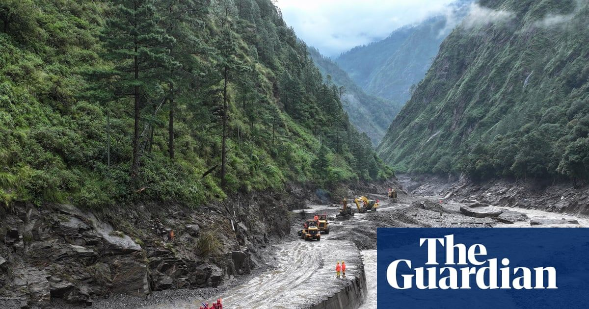

Word of the Day · Passion of St John the Baptist
29 Aug 2026
Reading: 1 Corinthians 1:26–31. Gospel: Mark 6:17–29. Herod has John killed after the dance at his birthday banquet. John had told him it was not lawful to have Herodias.
Benedict XVI (29 Aug 2012): with love for Christ and for the Truth, “we cannot stoop to compromises.” Christian life asks the martyrdom of daily fidelity, and that only holds if prayer comes first. “Prayer is not time wasted.”
Open Vatican News

Calamba, Laguna
29 Aug 2026
Flood riskHabagat
Open-Meteo: 25–28°C, sticky, rain on and off all day (about 15 mm). PAGASA had Calamba under orange Friday 8pm (flooding threatening). Habagat keeps 50–100 mm over Laguna through Saturday. Classes suspended 29 Aug in several Laguna towns.
| Hour | Temp | Humidity | Rain | Precip |
|---|
| 06:00 | 25° | 96% | 100% | 0.2 mm |
| 07:00 | 26° | 95% | 100% | 0.1 mm |
| 08:00 | 26° | 92% | 100% | 0.3 mm |
| 09:00 | 27° | 90% | 100% | 0.5 mm |
| 10:00 | 28° | 87% | 100% | 0.7 mm |
| 11:00 | 28° | 89% | 100% | 1.3 mm |
| 12:00 | 28° | 86% | 100% | 1.6 mm |
| 13:00 | 27° | 90% | 100% | 0.8 mm |
| 14:00 | 27° | 87% | 100% | 0.5 mm |
| 15:00 | 28° | 87% | 100% | 0.6 mm |
| 16:00 | 27° | 90% | 100% | 0.5 mm |
| 17:00 | 26° | 93% | 100% | 0.3 mm |
| 18:00 | 26° | 92% | 99% | 0.2 mm |
| 19:00 | 25° | 93% | 97% | 0.1 mm |
| 20:00 | 26° | 93% | 92% | 0.0 mm |
| 21:00 | 25° | 93% | 83% | 0.3 mm |
Hours in PH time. Source: Open-Meteo. Flags: PAGASA / GMA, 28 Aug 8pm.
Open the PAGASA alert

Nepal–Tibet: rescue back on after a lake overflow
29 Aug 2026
Wednesday’s glacier-collapse flood. Nepal says at least 579 dead and 1,924 missing. A debris lake overflowed Friday and paused rescue for hours; operations resumed. Nepal has declined foreign search teams for now.
Open the piece
Iran war at six months, Washington turns to sanctions
29 Aug 2026
AP: six months after a conflict Trump called a short “excursion.” Treasury’s Operation Economic Outcast warns countries off trade with Tehran. Iran called the new curbs “state terrorism.”
Open the piece
Norway: Harald V dies, Haakon VIII is king
29 Aug 2026
King Harald V died Friday in Oslo, 89. His son is King Haakon VIII. Oath before the Storting on Tuesday. National mourning; flags at half-mast.
Open the piece
“You say that you don't know how to pray? Put yourself in the presence of God, and once you have said, 'Lord, I don't know how to pray!' rest assured that you have begun to do so.”
St Josemaría Escrivá, The Way, 90 · escriva.org
Word
fidelity — staying true when it costs. The Baptist’s memorial, and Benedict’s note for the day: no bargain with the truth, and prayer first.